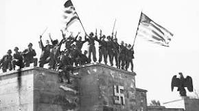
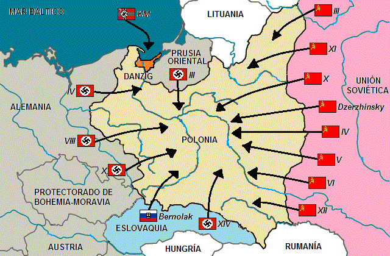

¿Qué fue?La Segunda Guerra Mundial fue un conflicto militar global que se desarrolló entre 1939 y 1945. En ella se vieron implicadas la mayor parte de las naciones del mundo. |
 |
¿Como inicio?
Alemania inició la Segunda Guerra Mundial al invadir Polonia el 1°
de septiembre de 1939. En años posteriores, Alemania invadió 11
países. La mayoría de los judíos |
 |
¿Como termino?
Luego de la batalla del 2 de mayo de 1945, dónde se dió la
victoria soviética sobre tropas alemanas, el Tercer Reich se
desmoronó completamente. Días antes, el 30 de |